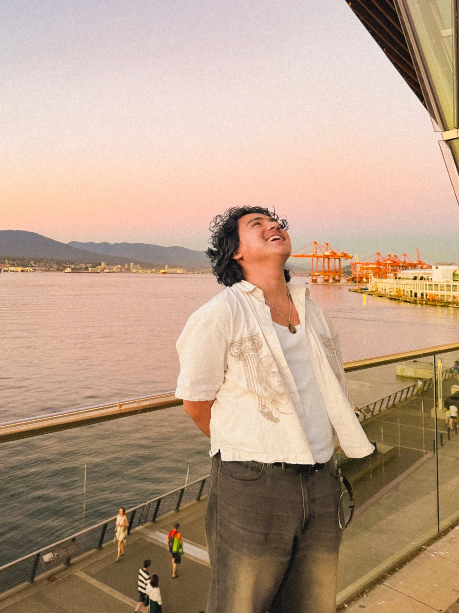

Worlds I Wanted To Understand
Minecraft and online game communities first made me curious about building spaces, systems, servers, and experiences instead of only playing them.
About
A shader turns math into a world. A rig turns a mesh into a character. A tool turns a repetitive art task into something editable. Gameplay code turns input into feedback. That connection between what is happening under the hood and what someone actually sees or feels is what keeps pulling me toward Technical Art and game development.

I chose computer science because I wanted to make games. The more I learned about graphics and production, the more interested I became in the bridge between engineering and art.
At Cal Poly, the Computing for Interactive Arts minor gave me room to study digital art, illustration, 3D modeling, computer graphics, mixed reality, and game design alongside the CS curriculum. That combination made things like shaders, procedural tools, animation systems, and gameplay architecture feel connected rather than separate specialties.
I especially enjoy the moments where a visual or design goal creates a technical question: How should this terrain be represented? How can an artist generate variations without rebuilding the asset? Why does this animation feel disconnected from gameplay? What state should drive this effect? Those are the kinds of problems I want to keep getting better at solving.
Music is part of that story too. Years of choir and vocal jazz taught me that good collaborative work is rarely about one person being loudest. It is about timing, listening, adjusting, and knowing how your part supports the whole.
How I Got Here
Minecraft and online game communities first made me curious about building spaces, systems, servers, and experiences instead of only playing them.
CS gave me the foundation to reason about software, data structures, graphics pipelines, performance, and the implementation behind interactive experiences.
Digital art, illustration, 3D work, and real-time graphics gave me a stronger visual vocabulary and made the pipeline itself interesting.
SIGGRAPH and project work showed me a career where tools, rendering, VFX, animation, environments, and engine constraints meet production needs.
How I Work
Before choosing a tool or architecture, I want to understand what needs to become easier to create, clearer to read, faster to iterate, or more convincing to the player.
Exposed parameters, readable state, useful debug information, and documentation matter because the next person should not have to reverse-engineer the solution.
Playtests, profiler captures, screenshots, node graphs, runtime behavior, and feedback are more useful to me than assuming the first version is finished.
Current Direction
My strongest work happens where technical problem-solving and creative expression meet.
Before I was building games, I was a musician. Years of choir, vocal jazz, and performance taught me how much timing, collaboration, iteration, and small creative choices shape what an audience ultimately feels. That mindset followed me into digital art, 3D work, and eventually game development. I still approach interactive work with the same question I had as a performer: what does the audience experience?
Computer Science gave me the engineering foundation to understand how these experiences work underneath the surface. I am continuing to deepen my skills in Houdini, Unreal and virtual production, shaders and rendering, animation pipelines, VFX, and tools development so I can contribute across both sides of production. Whether that leads me toward Technical Art, Gameplay Engineering, or another role between art and engineering, the part I enjoy most stays the same: solving the technical problems that help creative ideas make it all the way to the player.